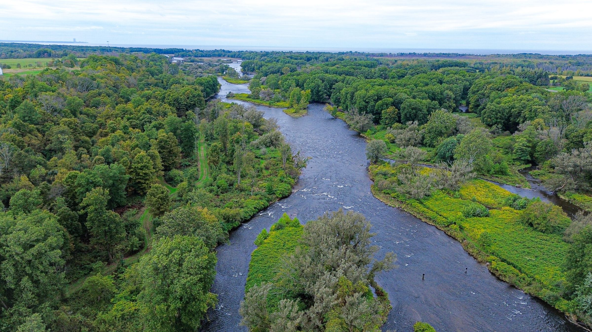
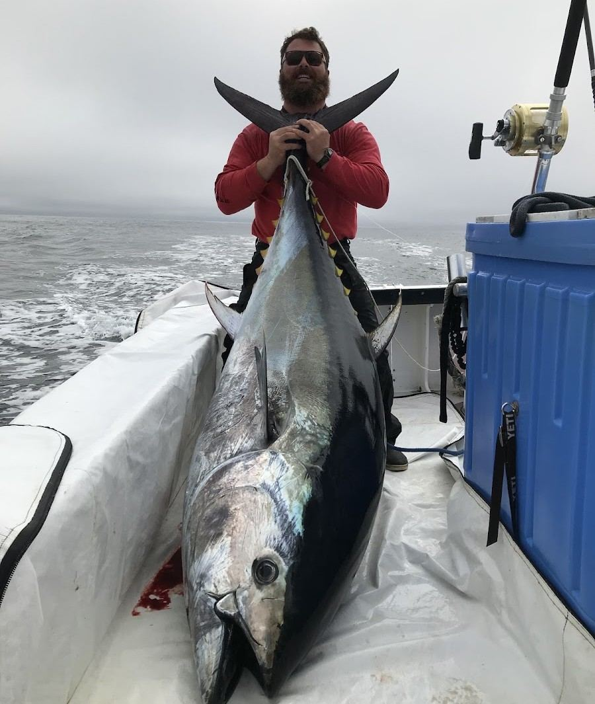
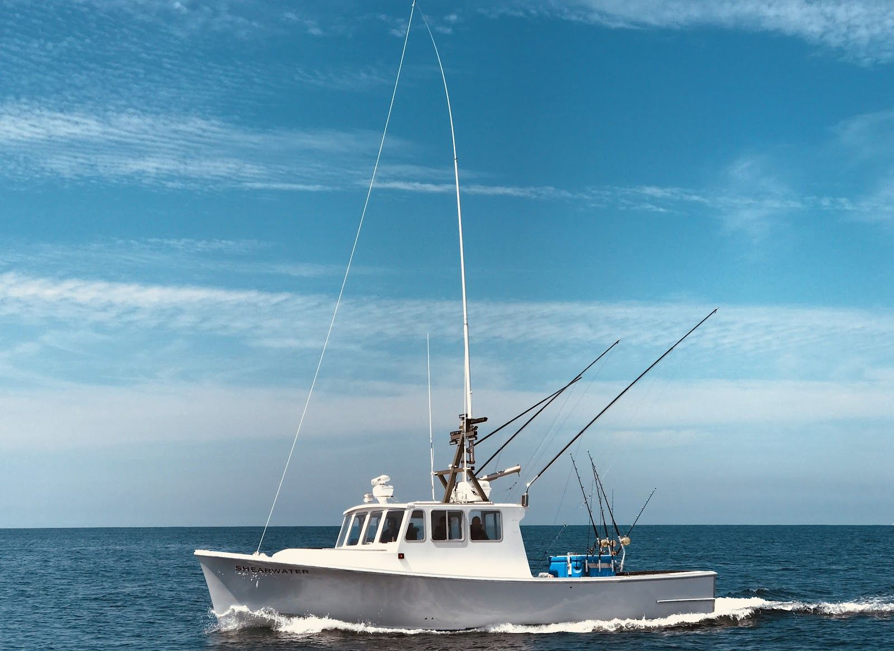
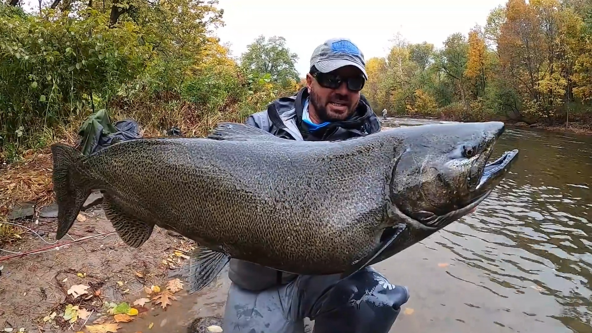
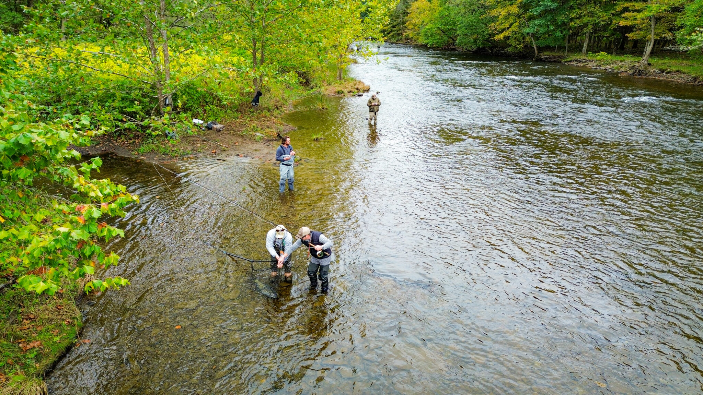
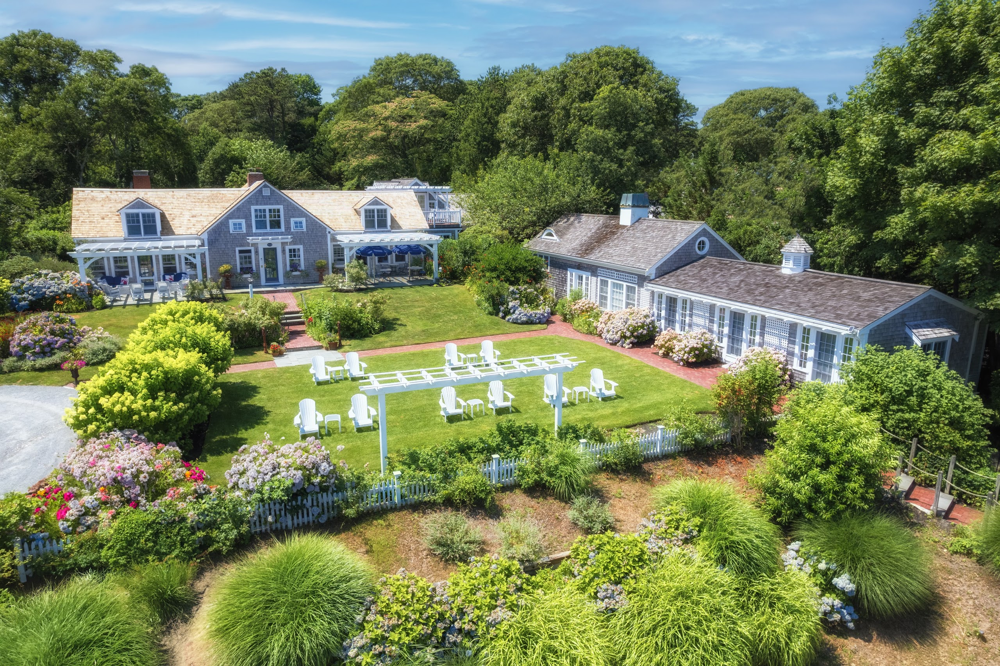
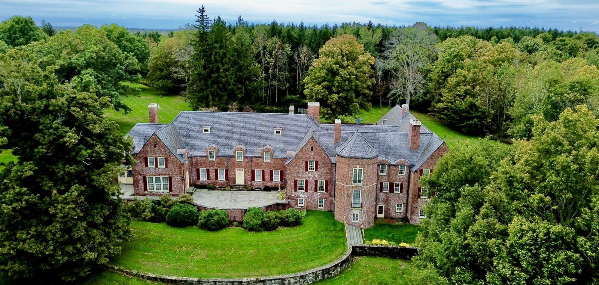
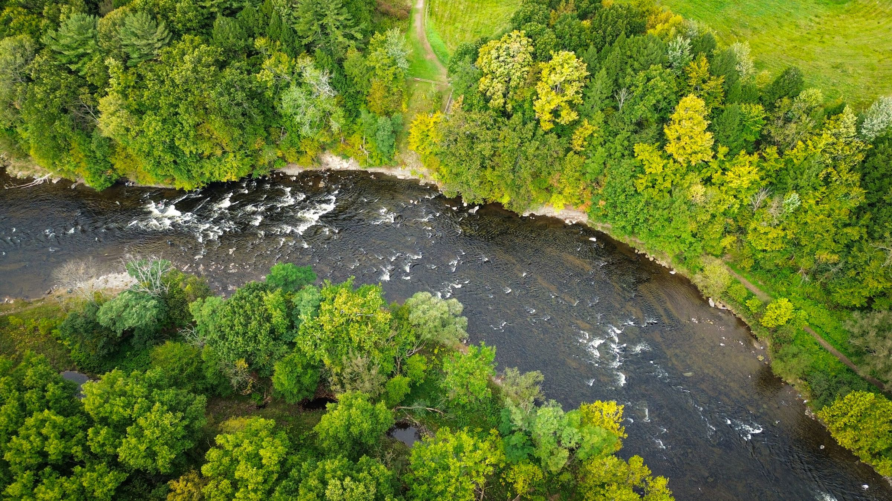

Размещение в Douglaston Manor House, целиком под нашу группу. Дом принимал президентов и глав государств, и вряд ли какой-то рыболовный дом в Америке сравнится с ним по истории.
Самая стабильная тунцовая вода северо-востока: рыба стоит здесь с июня по ноябрь. Размещение в A Little Inn on Pleasant Bay, целиком под нашу группу. Девять номеров на первой линии залива, окна на воду и сад, интерьеры в новоанглийской палитре от Мэтью Йи.

Прилёт в Бостон, трансфер в Чатем, заселение.
Три лодки на группу. Выход в 5:00 всей флотилией: заготовка живца, переход на банки Crab Ledge и Regal Sword. Якорная ловля на живца и чанкинг, снасть 130 lb, 10–12 часов на воде. Рабочий сценарий — 1–2 поклёвки рыбы от 200 кг на лодку; вываживание занимает 1–3 часа.
Решение накануне вечером с капитанами по каждой лодке самостоятельно. Вариант А — повторный выход на гиганта. Вариант Б — тунец 30–100 кг на спиннинг и джиг по птичьим котлам; рыбу 69–185 см можно забрать, две на лодку.
Погодный резерв. Если оба дня состоялись — третий день рыбалки по выбору группы или отдых.

Чартерный рейс в Syracuse, трансфер 45 минут. Заселение в Douglaston Manor — дом на частном участке реки Salmon, целиком под группу. Вечером — встреча с гидами, план по воде на три дня.

2,5 частные мили реки Salmon у впадения в Онтарио — единственный закрытый участок реки. На воду — пешком от дома, ловля вброд с гидами. Ход чавычи начинается в начале сентября, пик — вторая половина сентября и первая половина октября; даты стоят внутри пика. На реке установлены рекорд Великих озёр по чавыче — 21,7 кг — и мировой рекорд по кижучу — 15,1 кг.

Трансфер в аэропорт 45 минут. Вылет по маршрутам группы.

Бутик-отель на первой линии залива, между Чатемом и Орлеаном, — на время поездки целиком под группу: все номера, сад, терраса. Отель отмечен Fodor's, National Geographic Traveller и Travel + Leisure.
Завтрак сервируется в саду или на террасе; под ранние выходы в море кухня собирает завтрак-боксы и термосы к назначенному часу. Рестораны Чатема — в десяти минутах.

Поместье семьи Barclay: участок в собственности с 1807 года, частная рыболовная вода открыта в 1987-м. Дом стоит в нескольких сотнях ярдов от реки — на воду выходим пешком. Номера с санузлами.
Кухня дома: завтрак готовится на заказ перед выходом на воду, обед — на берегу реки или в доме, ужин — с винами из погреба. Аперитив — в библиотеке, баре или на террасе над рекой.
Бостон → Чатем — автомобиль, около 2 часов. Чатем → Syracuse — чартерный рейс, около 1 ч 15 мин. Syracuse → Бостон или Нью-Йорк — чартерный рейс, около часа. Все трансферы по программе — на месте.
Цена: — USD за человека, 9 дней / 8 ночей.
Порядок оплаты: —.
Погода: по тунцу в программе резервный день 22 сентября; программа лососёвых дней выбирается по обстановке накануне вечером.
